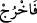

Şu halde bâtıl bir farzedişle diyelim ki, ateş topraktan daha üstündür; bundan ateşten
yaratılanın topraktan yaratılandan daha üstün olması lazım gelmez ki! Çünkü her şeye
kâdir olan Zât, aşağı seviyedeki bir maddeden, üstün maddeden (yaratılmış olandan)
daha üstün bir şey yaratabilir. Çünkü madde eksikliği değil, sonuç olarak kimin kâmil
yaratıldığı esastır. Demek ki Lâînin gözü varlığa mahal teşkil eden nesneden geçip
sûretin kemâline ve yaratılışın nihai durumuna intikal edememiştir.
Keşfü’l-esrâr’da der ki: Ateş ayrılık sebebi iken toprak vuslat yâni kavuşma
sebebidir. Ateşten kopup dağılma; topraktan ise bağlanma zuhûr eder. Topraktan olan
Âdem bağlandı ve neticede “Sonra Rabbi onu seçti” halkasını kazandı. Ateşten olan
Şeytan dağılıp ayrıldı, neticede “Oradan in!” emri ile merdûd oldu, kovuldu. Birgün
kafası karışık birisi Sultânü’l-ârifîn Ebû Yezîd’e dedi ki: Bu zararsız toprak olmasaydı
ne olurdu? Ebû Yezîd ona şöyle seslendi: Eğer bu toprak olmasaydı, aşk ateşi
yakılamazdı, gönüllerin yanışı, gözlerin yaşı ortaya çıkamazdı. Eğer toprak olmasaydı
ezelî şefkat kokusunu kim koklayabilirdi? Sonsuz olanın yakınlığına kim âşinâ
olabilirdi?
Ey toprak! Ne hoş bir karaktere sâhipsin,
Toprağında var olan, latîf güllerdir.
Küntü kenz mahzeninde olan her hazîne,
Senin gönlünde sakladığına teslim olmuşlardır.
Âyette bir de iddiâcı ve inkârcı tiplerin nebîlerle velîlerin üstünlüklerini ebediyyen
idrak edemeyeceklerine, onların üzerindeki cemâl ve celâl nurlarını göremeyeceklerine,
buna bağlı olarak da vuslat serinliğinin tadına varamayacaklarına, aksine kıyamete
kadar Rabbü’l-izzet’in kovma ve uzaklaştırma hitaplarına muhatap olacaklarına işâret
vardır.
İddiâcı kişi, sırrı seyretmeye gelmek istedi,
Ancak gayb eli geldi ve o yabancının göğsüne vurdu.
77. Allah: Çık oradan (cennetten)! Sen artık kovulmuş birisin.
“Allah” kahr ve izzetiyle buyurdu ki öyleyse ey İblis! “Çık oradan (cennetten)!” ya
da melekler zümresinin arasından!
(__WORD__)’taki (__WORD__), ifâdeye “öyleyse” şeklinde bir anlam katarak mezkûr emri İblis’in
karşı çıkışı üzerine terettüb ettirmektedir. Yâni Cenâb-ı Hak kahr ve izzetiyle buyurdu
ki: Öyle ise, ey İblis! Cennetten ya da melekler zümresinden çık. Beydâvî’nin de dediği